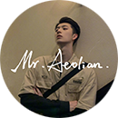

山河袈裟：凤凰涅槃的尘世之爱
李修文十年面壁，山林中隐匿的寻踪，小镇中宁静的孤独，小旅馆中孑然一身的体验， 长途火车上漫长思考的颠簸，不同场景中李修文总是能在普罗大众中找到真谛， 十年的孤寂旅程，面对写作是一种自觉，也是一种警醒， 十年后归来，《山河袈裟》是修行的悟道，也是人生历练的精进。 More...
By- aeolianLee 12 December'20 55 12 31
孤独的人不曾拥有，索性就孤独下去吧
真的有人会放弃自己的利益而去完成一些在别人看来毫无意义的事吗？ 有的。他大概只是在绝望中找到了一点希望。 他从来不想索取什么，因为他清楚什么都不曾拥有的人，从来都是独自一人。 他害怕孤独，但早已习惯，如果这个世界上必须有人是孤独的，他希望是自己， 他知道孤独的感觉，所以，他不想让这份活着的死刑传递下去。 More...
By- aeolianLee 11 December'20 62 17 16
人生不会重来，但未来总可期待
只要足够努力，足够优秀，就一定可以撕掉"你不行"的标签，成为那个更好的自己。 《新华字典》1998修订本中有一个关于"前途"的例句："张华考上了北京大学，李萍进了中等技术学校，我在百货公司当售货员，我们都有光明的前途。" 去勇敢地决定自己的生活、努力地追求自己的生活吧，要知道，平凡普通如我们，但，我们都会有光明的前途。 More...
By- aeolianLee 9 December'20 197 69 196
这里是Lee的电台播客
Aeolian Lee
播客&音频后期处理
想用声音打动陌生的你
没有天生优越的嗓音条件
但可以使用专业后期进行处理
通过以下方式联系我
|
aeolianLee |
Aeolian |
aeo2200 |
|
Aeolian |
Aeolian_X |
Aeolian |
频道内容精选
-
山河袈裟：凤凰涅槃的尘世之爱
播客·PodcastaeolianLee
-
孤独的人不曾拥有，索性就孤独下去吧
播客·PodcastaeolianLee
-
人生不会重来，但未来总可期待
播客·PodcastaeolianLee
-
我没有遗憾了，只是很舍不得你
播客·PodcastaeolianLee
-
晚安，做个好梦
播客·PodcastaeolianLee
-
余生很长，别为难自己
播客·PodcastaeolianLee
-
始于颜值，敬于才华，合于性格，终于人品
播客·PodcastaeolianLee
-
最好的余生：有家回，有人等，有饭吃
播客·PodcastaeolianLee
-
失望多了，心就冷了
播客·PodcastaeolianLee
-
你总要一个人走过一些艰难
播客·PodcastaeolianLee